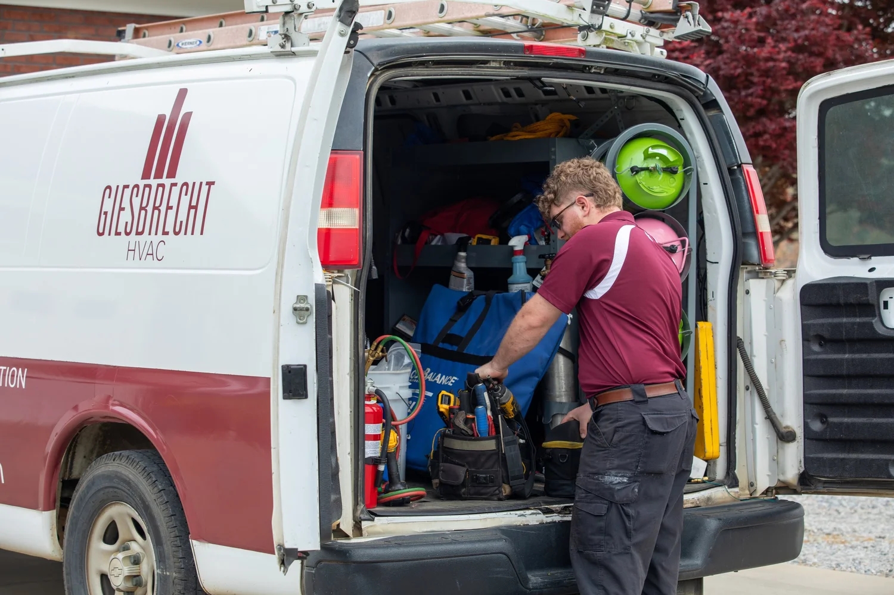

AC is not keeping up
Warm rooms, long run times, weak airflow, or a system that cannot beat Augusta heat.
Augusta area AC repair and HVAC service
Giesbrecht HVAC helps homeowners and small businesses solve cooling problems, high energy bills, humidity issues, replacements, maintenance, and emergency repairs.

When comfort breaks down
Warm rooms, long run times, weak airflow, or a system that cannot beat Augusta heat.
Giesbrecht can look for comfort and efficiency issues instead of guessing at the thermostat.
Indoor comfort is not just temperature. Healthy humidity often needs to stay near 45% to 55%.
When the system stops working, the next question is simple: how fast can help get there?
AC and HVAC services

Diagnostics, urgent cooling issues, weak airflow, strange sounds, and systems that are not keeping up.

New project proposals and equipment replacement guidance built around comfort and long-term performance.

Tune-ups, performance checks, energy-efficiency improvements, and prevention-focused service plans.
Why choose Giesbrecht HVAC?
Founded in 1996, Giesbrecht HVAC brings decades of heating and air-conditioning experience to homes and businesses across Augusta and the surrounding communities.

Customer proof
"Most excellent HVAC company I have ever dealt with in over 50 years."
Randy S.
"Brian Lane was at our door within 15 minutes of making the call."
Jocelyn P.
"Their knowledge and professionalism are head and shoulders above everyone else."
Neil G.
Quick answers
Call Giesbrecht HVAC so a technician can diagnose airflow, refrigerant, equipment, thermostat, and efficiency issues.
Yes. Indoor comfort depends on both temperature and moisture. Many homes feel best when humidity stays near 45% to 55%.
Yes. This landing page focuses on Augusta, Evans, Martinez, Grovetown, and North Augusta.
Request service
Call now for the fastest path. The form area below is reserved for the final embedded form once Kennedy sends the code.
Call (706) 826-0644The final form is powered by a separate domain and will be embedded after the HTML is supplied.